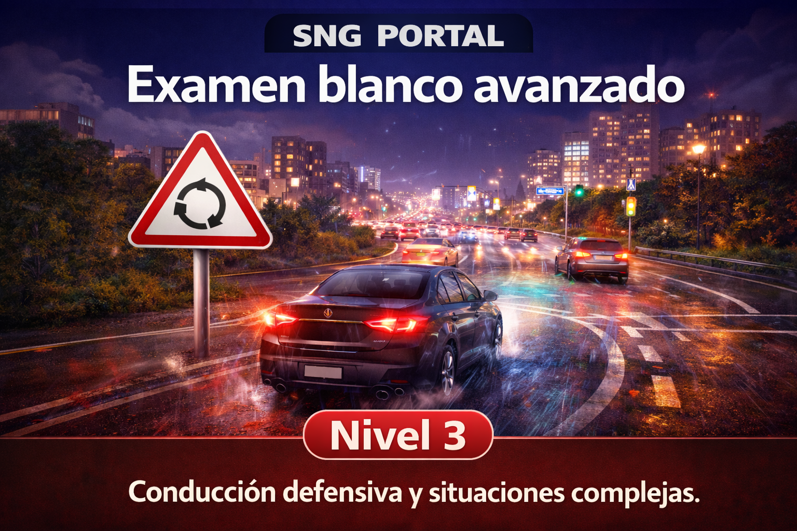

Comment gagner de l’argent en ligne en 2026 : méthodes sérieuses pour débuter

En 2026, il est possible de développer des revenus en ligne avec des méthodes réelles et accessibles, à condition d’adopter une approche progressive. Les revenus numériques durables reposent rarement sur un “truc secret”. Ils viennent plutôt d’une combinaison de valeur créée, de régularité et de gestion du risque.
📌 En bref
- L’affiliation, le contenu, le freelancing et la vente sont les 4 piliers solides.
- Le succès vient de la constance et de la qualité, pas des promesses rapides.
- Le plan d’action doit être mesuré avec des indicateurs concrets.
- La prudence anti-arnaque reste essentielle à chaque étape.
1) L’affiliation : recommander des produits utiles
L’affiliation consiste à recommander un produit ou un service via un lien traçable. Lorsqu’un utilisateur achète via ce lien, vous recevez une commission. Ce modèle peut fonctionner dans plusieurs niches. Pour être crédible, il faut éviter les recommandations opportunistes et privilégier des produits réellement pertinents pour votre audience.
2) Création de contenu : bâtir une audience
Créer du contenu (site, newsletter, vidéo, podcast, réseaux sociaux) reste une base solide pour monétiser en ligne. L’objectif est de résoudre un problème concret : apprendre, comparer, simplifier, guider. Plus votre contenu répond à un besoin précis, plus votre audience devient qualifiée.
3) Freelancing : vendre une compétence
Le freelancing permet de générer des revenus plus rapidement que d’autres modèles, car il repose sur une compétence vendue directement à des clients. Pour débuter, il est utile de créer un portfolio simple et de proposer une offre claire orientée résultat.
4) Vente de produits : physique ou numérique
La vente en ligne reste un pilier, qu’il s’agisse de produits physiques ou de produits numériques. Avant de lancer, il faut valider la demande : analyser la concurrence, comprendre les objections des clients et tester une offre minimale.
💡 À retenir
La monétisation durable repose sur la confiance et la régularité. Pour mieux gérer le risque, comparez aussi avec nos articles Bitcoin 2026 et analyse loterie responsable.
Prudence : reconnaître les arnaques
Signaux d’alerte fréquents : promesse de gains garantis, pression pour payer vite, absence d’informations légales, témoignages invérifiables, “système secret” sans méthode claire. Une opportunité sérieuse accepte les questions, explique le modèle économique et ne vend pas l’illusion d’un enrichissement instantané.
Plan de démarrage réaliste
Un plan simple peut tenir en quatre étapes : choisir une voie principale, produire un premier actif utile, obtenir les premiers retours réels, puis itérer chaque semaine. Mesurez les progrès avec des indicateurs concrets : trafic qualifié, demandes entrantes, taux de conversion, satisfaction client, revenu net.
Conclusion
Gagner de l’argent en ligne en 2026 est possible avec des méthodes sérieuses, mais cela demande du travail, des compétences et une gestion rigoureuse des risques. Le meilleur réflexe reste la prudence : éviter les arnaques, tester progressivement et bâtir un modèle durable.
💼 Soutenir SNG Portal
Vous avez un projet, une offre ou une marque à promouvoir ?